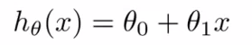

Machine Learning A Definition
Tom Mitchell (1997): "A computer program is said to learn from experience E with respect to some class of tasks T and performance measure P, if its performance at tasks in T, as measured by P, improves with experience E"
Example: A Spam Filter
Experience E - Watching the emails being labeled as spam or not-spam
Task T - Classifying the emails as spam or not-spam
Performance P - The number or percentage of emails correctly classified as spam or not-spam
Regression Predicting a continuous valued output
Observed data is modeled so that outputs for unobserved inputs can be estimated.
Example: Housing Prices in Portland, Oregon
Input Variable / Feature (x-axis) - Size in Square Feet
Output Variable / Target (y-axis) - Price in $1000s
With linear regression, we model the data with a straight line and then use that line to predict outputs for new inputs
Click on "Find Linear Regression" to see how we can best fit the data with a linear function.
Click on "Predict New Data Output" to see how we use the linear regression model.
Classification Predicting a discrete valued output
Observed data is modeled so that unobserved data can be classified.
Example: Cancer
2 Features - Tumor Size and Age of Patient
2 Classes - Benign and Malignant
With classification, we model the observed data to predict the class of new data based on which class the features of new data most closely resemble.
Click on "Classify Data" to see how we can best fit the data into two generalizable classes.
Click on "Predict Class" to see how we use this model to predict to which class the new data belongs.
The Hypothesis Finding a Line to Fit the Data
The learning algorithm uses the training data as input and outputs a function (called the hypothesis).
Example: Housing Prices in Oregon / Linear Regression
The hypothesis takes in as input the size-of-house feature and outputs an estimated target value for the price.
We represent this hypothesis as a linear function in this example:



Cost Function Finding the Right Parameters
The cost function helps figure out how to fit the best possible straight line to our data by minimizing the parameters θ0 and θ1 so that the hypothesis hθ(x) is as close as possible to the known output (y) for each observed input (from 1 to m) in the training data.
Training Process Classification
Training a supervised machine learning algorithm involves the following iterative process:
Collecting Data: Data is needed for both training and testing the algorithm.
Feature Choice and Model Choice: The characteristics of the data affect the features and model used.
Training: The known labels for observed data are provided for the algorithm to learn how to model the data.
Evaluation: The performace of the algorithm is evaluated. The process can restart at any one of the previous stages to enhance this performance.
The model created from the training process is then used to predict labels on new data.

Thanks to Andrew Ng's Coursera course on Machine Learning for the examples.